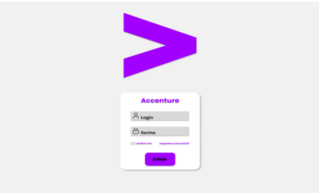
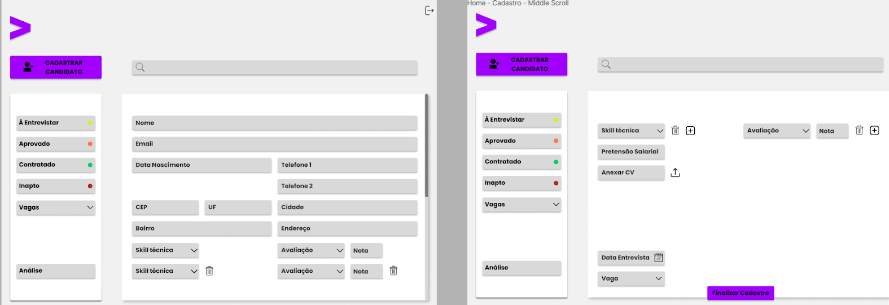

Gerenciamento de Entrevistas: Accenture
Sobre o projeto
Projeto integrador desenvolvido por alunos do curso de Análise e Desenvolvimento de Sitemas, da Faculdade Senac Pernambuco em parceria com o Porto Digital e a Accenture.
O sistema que será desenvolvido a partir do presente projeto será uma ferramenta corporativa que servirá como um sistema para o gerenciamento de entrevistas técnicas. Todo gerenciamento será realizado pelo líder responsável pela entrevista. Neste sistema será possível realizar o cadastro dos candidatos, das vagas e também irá dispor de um dashboard com informações e análises relevantes a respeito das candidaturas e entrevistas realizadas.
O gerenciamento das entrevistas será norteado por 4 funcionalidades especiais, presentes em 4 telas distintas. A primeira das funcionalidades exibe os candidatos com entrevistas a realizar e será a primeira tela para onde os candidatos cadastrados serão alocados. Após a realização da entrevista o candidato pode receber os status aprovado, inapto e contratado, tendo posteriormente seu cadastro realocado para suas respectivas telas. A tela de candidatos aprovados exibe os candidatos que realizaram a entrevista, foram considerados qualificados, mas estão pendentes do feedback de contratação. Já os candidatos inaptos são aqueles que não foram considerados qualificados, não possuem um perfil interessante para ser mantido no sistema ou não aderiram aos valores da empresa. Por fim, os candidatos contratados são aqueles que foram indicados para contratação na vaga a qual concorreram.
Um dos principais objetivos deste desenvolvimento é evitar o retrabalho de entrevistas, ou seja, caso um candidato submeta seu currículo para uma vaga, mas não seja aprovado para ocupar a mesma e, em um segundo momento, submeteu uma candidatura novamente, todos os registros da entrevista anterior estarão disponíveis para análise pelo entrevistador. Com isso, o entrevistador pode considerar ou não o referido candidato para a vaga em questão.
O dashboard visa extrair informações relevantes e que poderão servir como subsídio para tomada de decisões estratégicas. De modo geral as principais análises sobre as candidaturas estarão presentes no painel principal e poderão ser filtradas de acordo com períodos específicos.
 